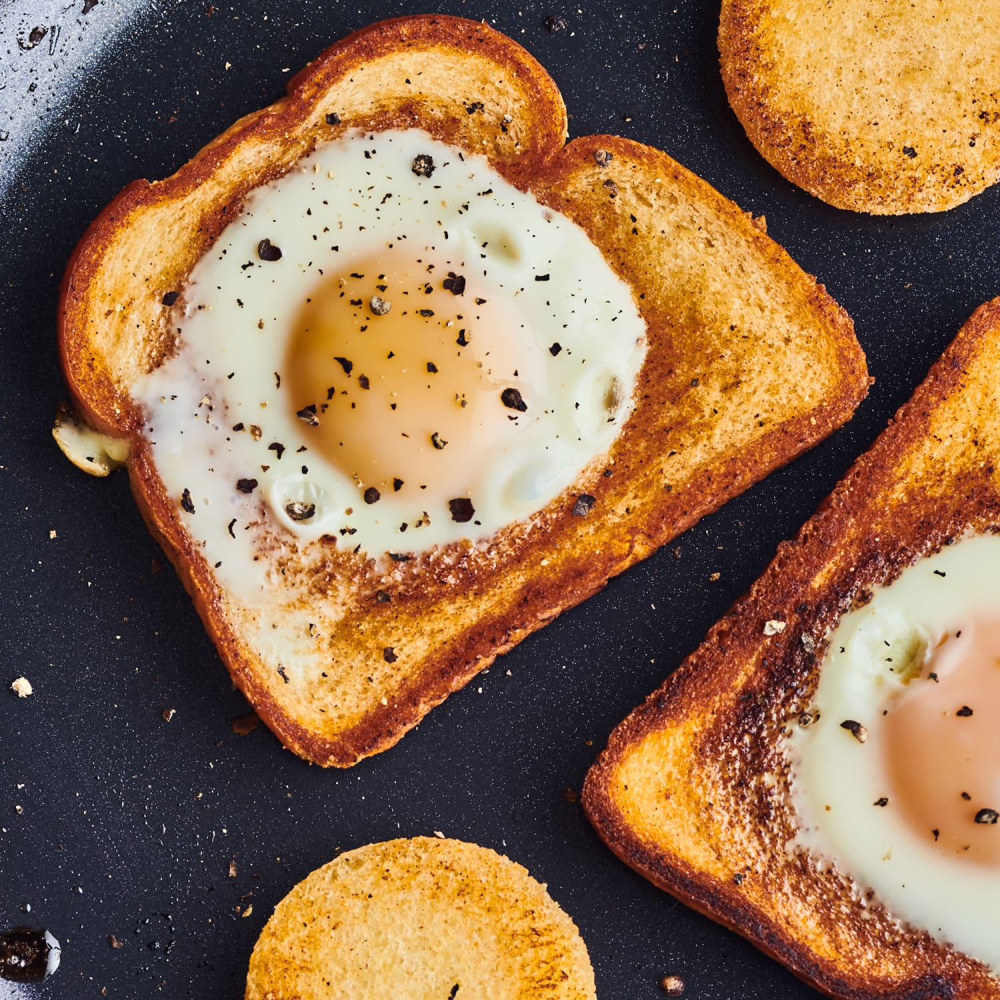

Toad In The Hole

Description
Why cook your eggs and toast seperately?
Efficiency at it's finest.
*also called Eggs In The Basket
Ingredients (for one toad in the hole)
- 1 egg
- 1 slice sandwich bread
- couple tablespoons butter
- salt (as wanted)
Steps
- While pan heats (medium-heat), use a shot glass to cut
small circle out of center of the bread.
- Add some butter and begin toasting one side
of bread.
- Flip bread and put more butter in center.
Crack the egg into center.
- Once egg white is cooked enough so that it holds, gently
flip bread. Careful not to break the yolk!
- Cook egg whites on other side. This is fast. You want
the egg yolk to still be runny.
- Slide onto plate, sprinkle salt, enjoy!